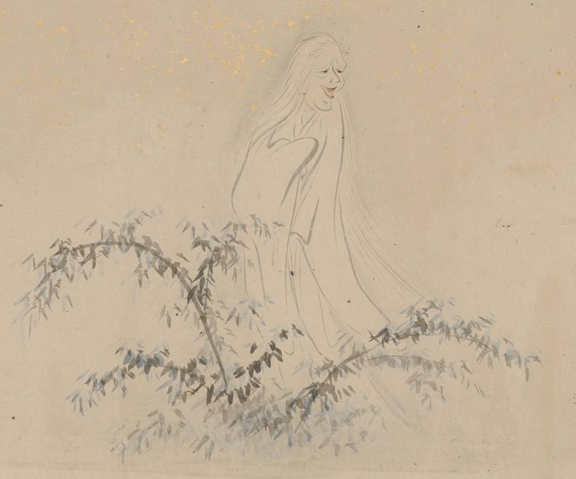

← 图鉴索引

雪女のように見える、白髪で白い着物を着た老女が、笑いながら草むらから姿を現している。
出典：親書誌：U426_nichibunken_0435：［妖怪絵巻］／日付：2017／資源識別子：U426_nichibunken_0435_0001_0001
Copyright (c)2010- International Research Center for Japanese Studies, Kyoto, Japan. All rights reserved.